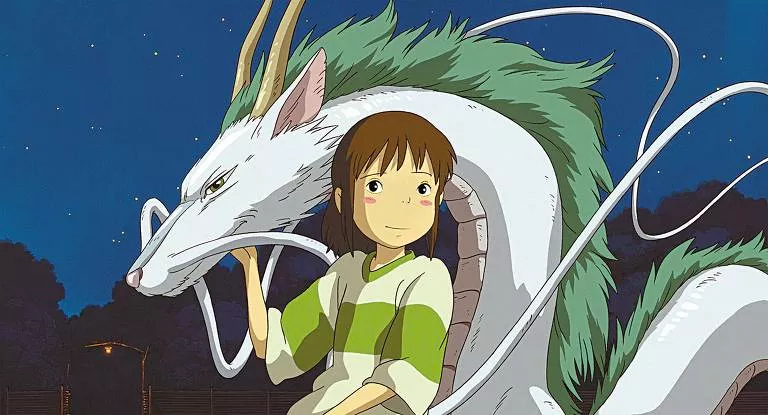
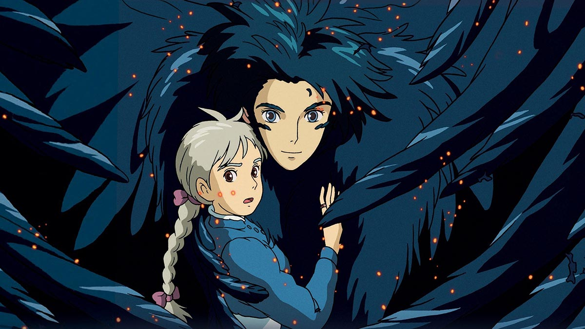
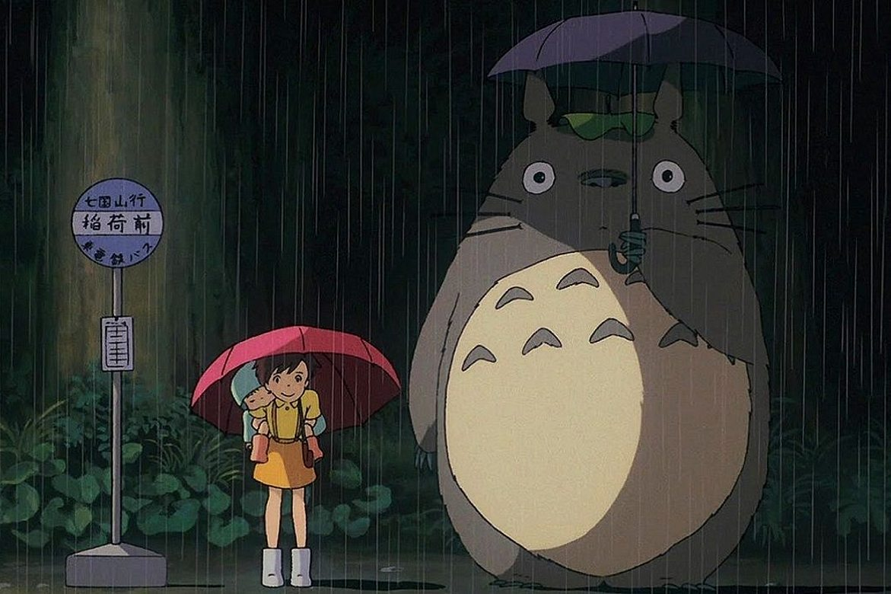
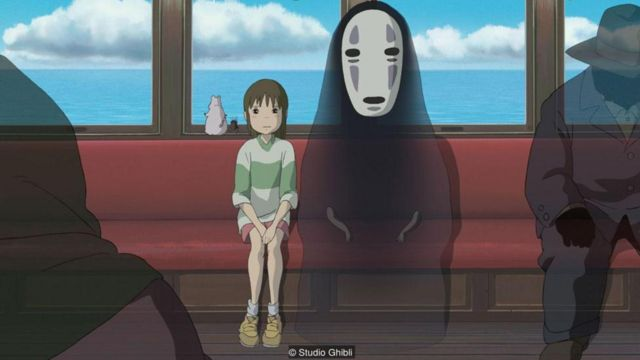
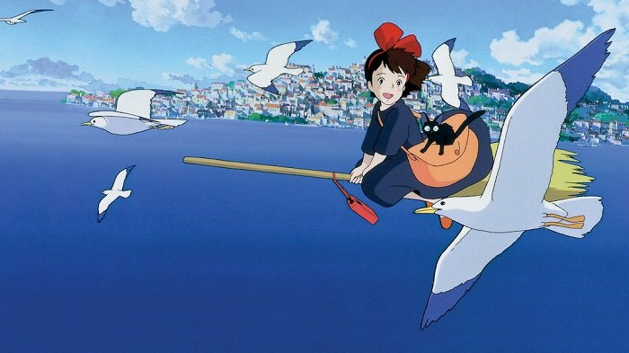
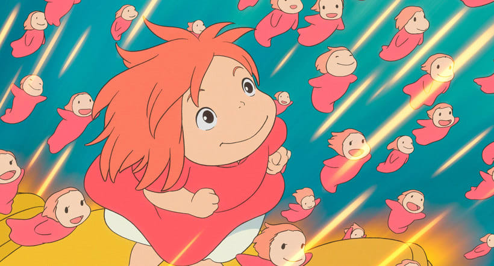
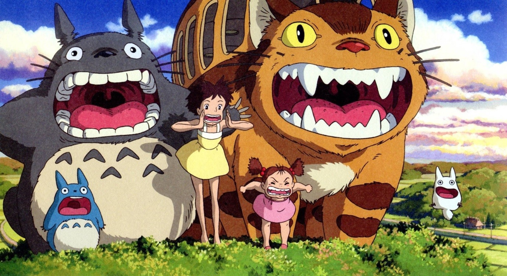
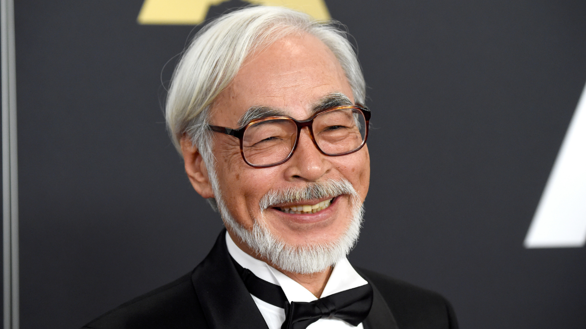
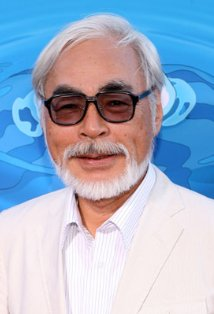

Studio Ghibli Inc.
É um estúdio de cinema de animação japonês com sede em Koganei, Tóquio . O estúdio é mais conhecido por seus filmes de animação e também produziu vários curtas, comerciais de televisão e um filme de televisão.
Veja mais
Algumas das Animações

A viagem de Chiriro
Chihiro e seus pais estão se mudando para uma cidade diferente. A caminho da nova casa, o pai decide pegar um atalho. Eles se deparam com uma mesa repleta de comida, embora ninguém esteja por perto. Chihiro sente o perigo, mas seus pais começam a comer. Quando anoitece, eles se transformam em porcos. Agora, apenas Chihiro pode salvá-los.

Ponyo: Uma Amizade que Veio do Mar
O garoto Sousuke encontra um peixinho dourado preso em uma garrafa e decide libertá-lo, sem saber que se trata da deusa do mar Ponyo. Filha de um poderoso mago, ela se comove com a atitude do menino e usa a magia do pai para se transformar em humana.

O Castelo Animado
Uma bruxa lança uma terrível maldição sobre a jovem Sophie transformando-a numa velha de 90 anos. Desesperada, ela embarca numa odisseia em busca do Castelo Andante, onde reside um misterioso feiticeiro que poderá ajudá-la a reverter o feitiço.

Meu Amigo Totoro
As irmãs Satsuki e Mei se mudam para o campo para ficar mais perto do hospital onde sua mãe está internada. Lá conhecem os Totoros, adoráveis criaturas místicas e alegres, que só podem ser vistas pelas crianças.

Princesa Mononoke
Um príncipe, em busca de uma cura, luta em uma guerra entre a mata e uma colônia mineira. Nesta aventura ele conhece Mononoke.

O Túmulo dos Vagalumes
Os irmão Setsuko e Seita vivem no Japão em meio a Segunda Guerra Mundial. Após a morte da mãe em um bombardeio e a convocação do pai para a Guerra, eles vão morar com alguns parentes.
Veja todos os filmes aqui
Recadinho 💗
Deixe abaixo uma mensagem ou envie uma cartinha!
Endereço
1234 Rua dos calcarios, Natal -RN. 8955-893
Telefone
+55(00)0 0000-0000
E-mail
estudios@ghiblisbr.com
Galeria




Sobre o autor
Hayao Miyazaki (宮崎 駿 Miyazaki Hayao?, Tóquio, 5 de janeiro de 1941) é um animador, cineasta, roteirista, escritor e artista de mangá japonês. É co-fundador do Studio Ghibli, uma companhia de cinema e animação, tendo conquistado reconhecimento e aclamação internacional pela qualidade de seus vários longas-metragens de animação, os quais ele normalmente escreve e dirige, sendo amplamente considerado como um dos principais nomes da indústria de animação japonesa.
Miyazaki desde cedo em sua vida expressou interesse em mangás e animações, indo estudar na Universidade Gakushuin e sendo contratado pela Toei Animation em 1963. Em seus primeiros anos profissionais, trabalhou como animador intermediário e depois colaborou com Isao Takahata. Também contribuiu com a animação de algumas produções da Toei até ir trabalhar para a A Production em 1971, onde co-dirigiu Rupan Sansei junto com Takahata. Miyazaki pouco depois foi trabalhar na Zuiyō Eizō em 1973, atuando como animador de Sekai Meisaku Gekijō e diretor da série televisiva Mirai Shōnen Conan. Mudou de empresa novamente em 1979, desta vez juntando-se à equipe Tokyo Movie Shinsha, estúdio onde dirigiu seus dois primeiros longas-metragem, Rupan Sansei: Kariosutoro no Shiro em 1979 e Kaze no Tani no Naushika em 1984, além da série Meitantei Hōmuzu.
.webp)

{kind=link}
{kind=link}
{kind=link}